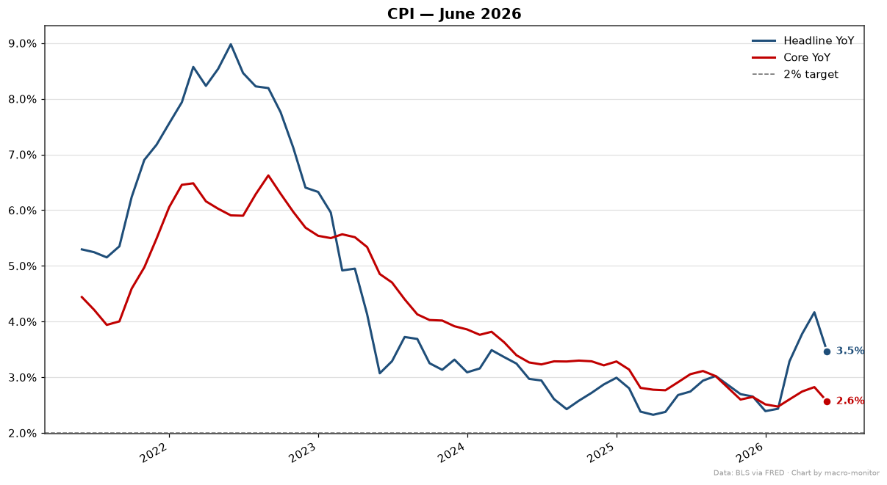
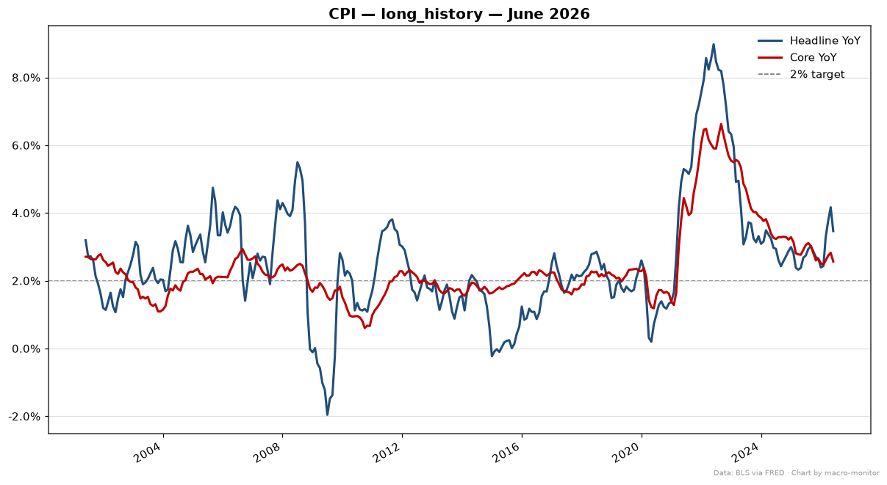
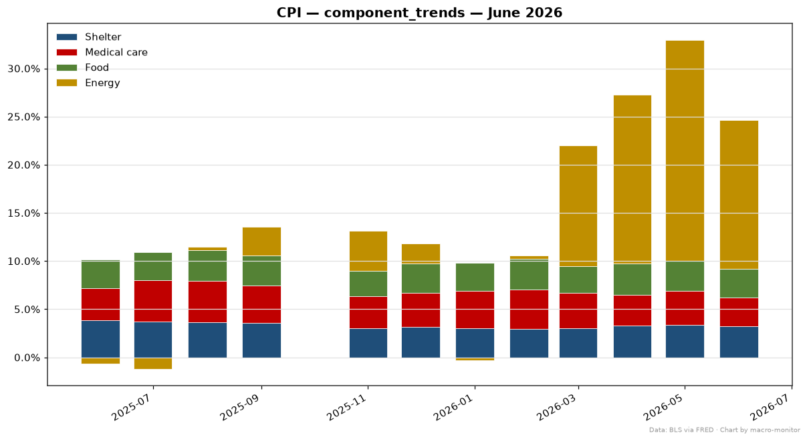
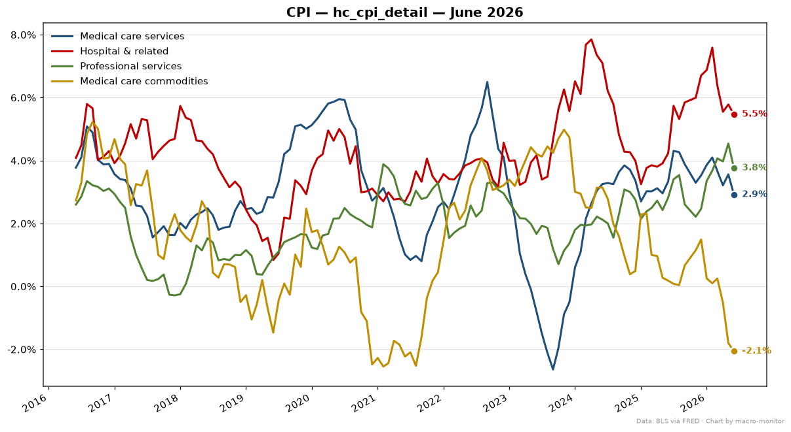

| Series | Primary | Also | Prior |
|---|---|---|---|
| Headline (CPIAUCSL) | -4.95% | yoy_pct 3.46% · mom_pct -0.42% | 5.82% |
| Core (CPILFESL) | -0.20% | yoy_pct 2.57% · mom_pct -0.02% | 2.53% |
Anchor: CPIAUCSL (annualized_mom) · delta z-score vs 5y: -2.57σ
| Trend | Stat | Value |
|---|---|---|
| 3mo annualized | annualized_mom | 2.78% |
| 6mo annualized | annualized_mom | 4.05% |
| Series | Transform | Value |
|---|---|---|
| Shelter (CUSR0000SAH1) | yoy_pct | 3.26% |
| Medical care services (CUSR0000SAM2) healthcare | yoy_pct | 2.92% |
| Medical care commodities (drugs/equipment) (CUSR0000SAM1) healthcare | yoy_pct | -2.06% |
| Hospital & related services (CUSR0000SEMD) healthcare | yoy_pct | 5.47% |
| Professional services (physicians/dental) (CUUR0000SEMC) healthcare | yoy_pct | 3.76% |
| Food (CPIUFDSL) | yoy_pct | 2.99% |
| Energy (CPIENGSL) | yoy_pct | 15.45% |



